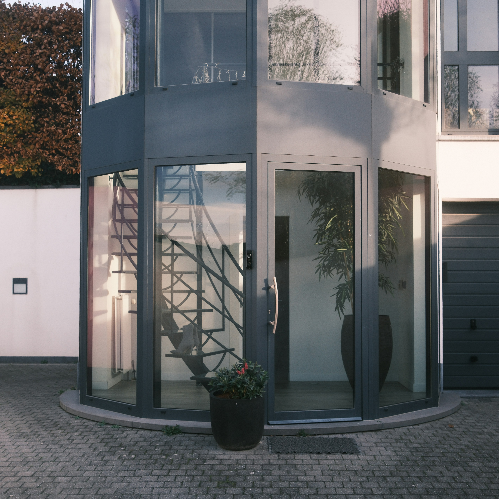
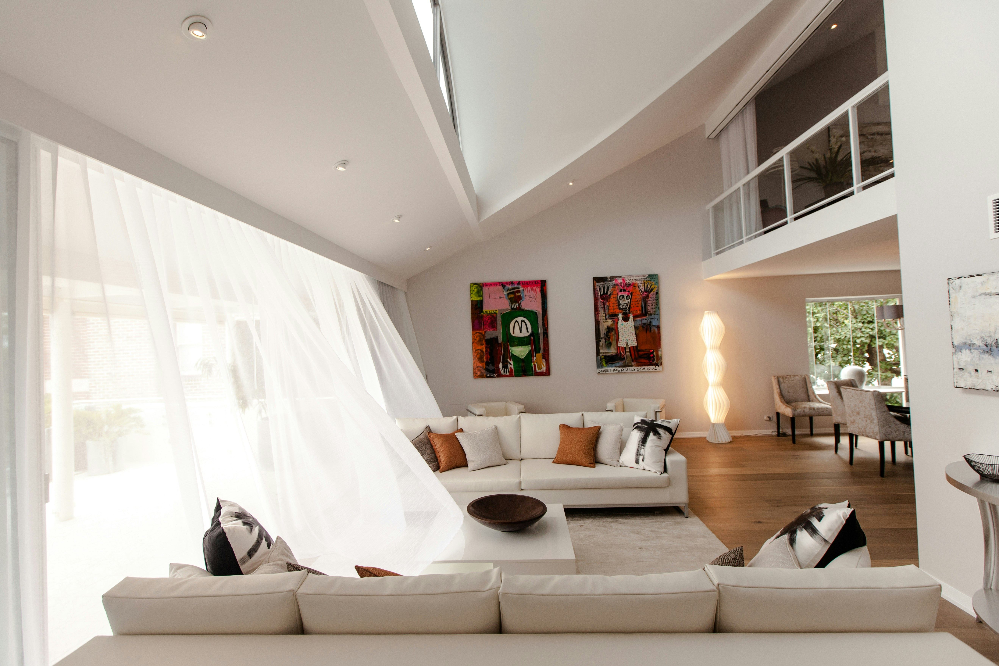
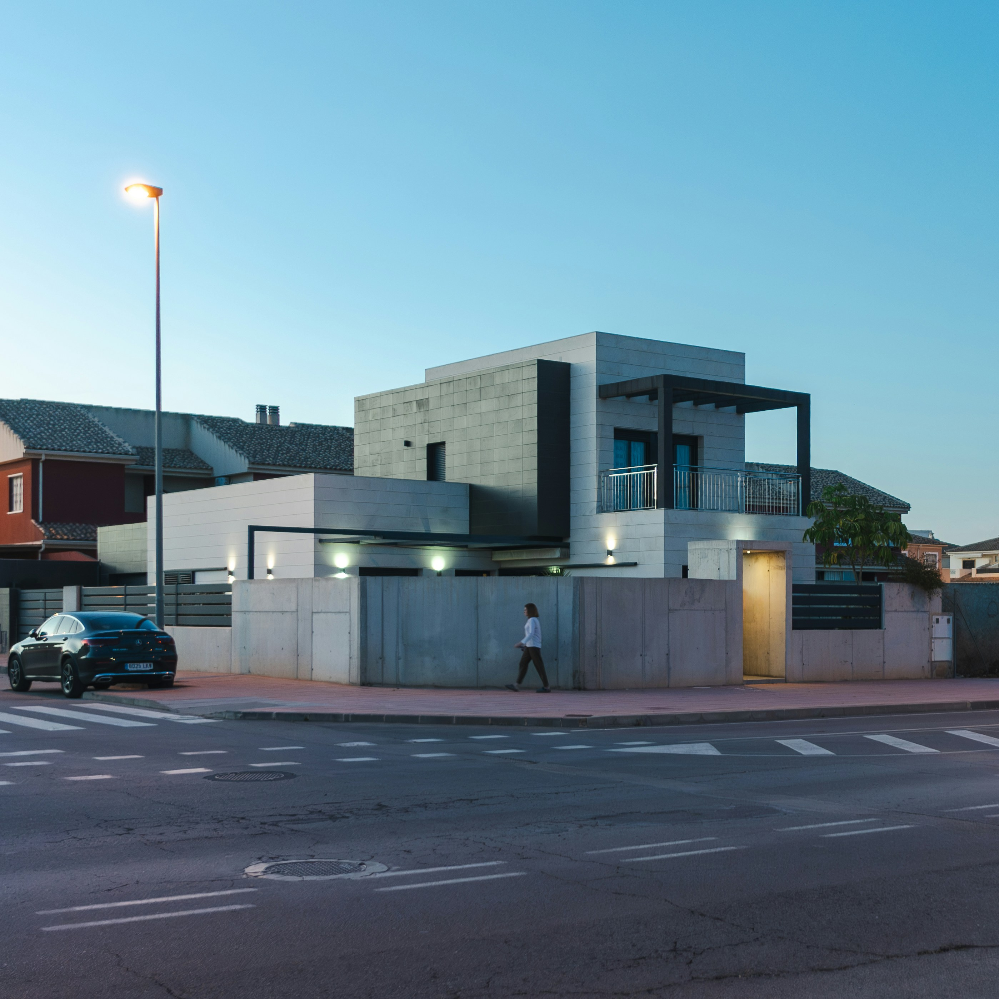

Phase 01
Discovery
We define the brief, the emotional direction, the practical constraints, and the ambition level of the project.
Our services are designed to work together, so architecture, interiors, visualization, and procurement all support one consistent design language.
Clients can appoint Aura Arch for one specialist package or retain the studio across the full life of a project. The benefit is continuity: fewer handoff gaps and a stronger overall result.
Spatial strategy, planning packages, construction documentation, and site-led design development for new builds and major renovations.
Space planning, room composition, bespoke joinery, finish schedules, and furniture direction developed with architectural coherence.
Renderings, walkthrough views, and review packs that make atmosphere, materials, and key design decisions legible before procurement.
Layered lighting plans, fixture schedules, and dimming logic that shape the emotional tone of the finished space.
Procurement support, contractor coordination, site review, and final installation oversight to keep the built result faithful to the concept.
We begin with circulation, threshold moments, massing, and daylight strategy so the project feels resolved before detail layers are introduced. This is where the emotional tone of the building is set.

New builds, structural renovations, and projects where the architecture must lead the interior narrative.
Our interior design packages go beyond decoration. They align room planning, custom joinery, fixture choices, textiles, and furniture into one atmosphere that supports real daily use.

Residences, hospitality projects, and executive interiors where the emotional finish matters as much as the plan.
Renderings are not just approval tools. They let us verify atmosphere, tonal balance, and detail hierarchy early, which improves decisions across materials, lighting, and custom pieces.

Complex spaces, high-value fit-outs, and clients who want clarity before fabrication or procurement begins.
These services can be commissioned independently or added to a wider architecture and interiors scope.
Fixture specification, dimming logic, and mood layers tailored to how the space shifts from day into evening.
05 ProcurementSupplier coordination, approvals, order tracking, and schedule clarity across furniture, finishes, and accessories.
06 StylingArt placement, object curation, soft furnishing edits, and room dressing before final photography and handover.
We define the brief, the emotional direction, the practical constraints, and the ambition level of the project.
Layouts, references, material direction, and early renderings establish the visual logic of the scheme.
We resolve drawings, finishes, joinery, lighting, and procurement documents in construction-ready detail.
Site oversight, supplier coordination, installation, and styling ensure the built result stays aligned with the intent.
We scope each commission around its real priorities, then build the service stack that best supports the project.